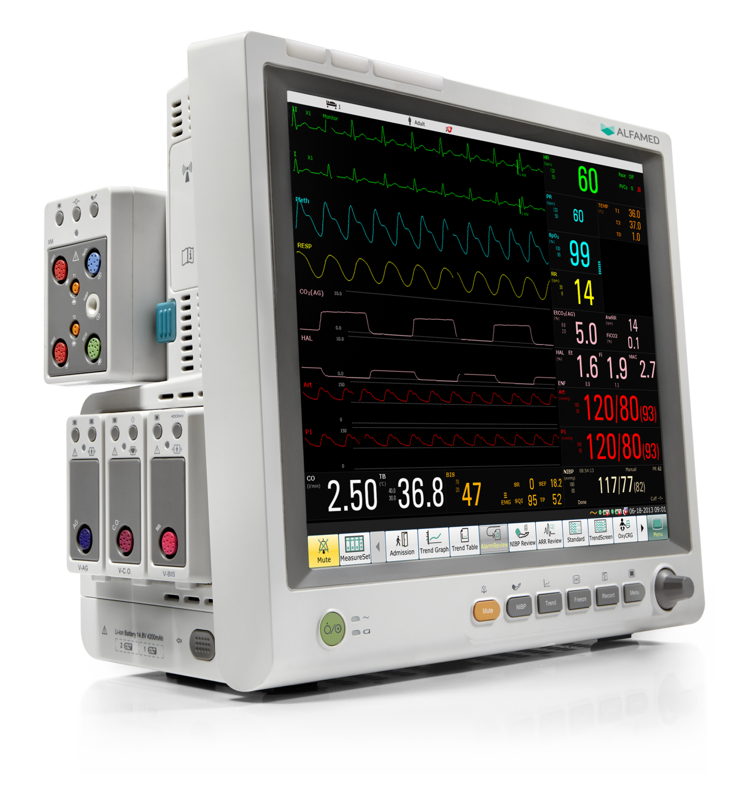
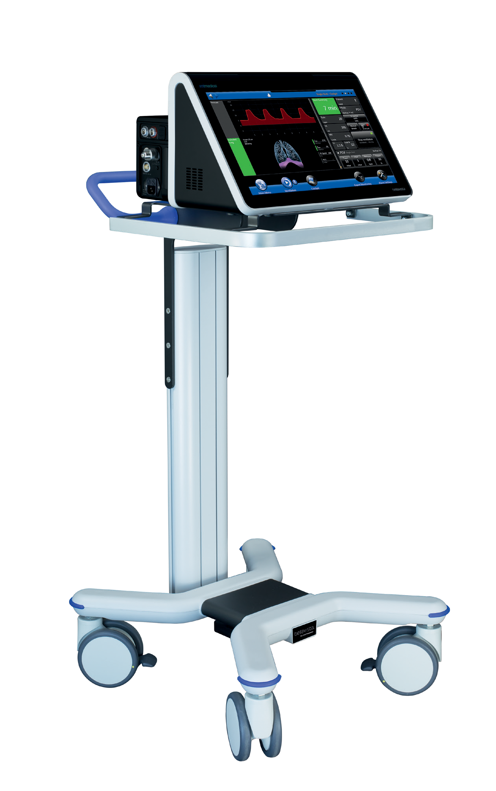

Engenharia Clínica
O que se refere a Engenharia Clínica
Engenharia Clínica é um campo multidisciplinar oriundo da união da engenharia biomédica com as demais áreas da engenharia cujo foco está no gerenciamento e na garantia de qualidade da infraestrutura tecnológica em um ambiente hospitalar. Sendo assim, qualquer assunto que envolva equipamentos e tecnologia da saúde possui uma relação direta com essa área.
Qual o papel da engenharia clínica dentro dos hospitais?
a Engenharia Clínica é fundamental para manter o bom funcionamento e gerenciamento do parque tecnológico e da infraestrutura hospitalar, visando o bem-estar dos pacientes e da equipe médica. Ou seja, as funções do departamento passam por definir ações, protocolos e procedimentos que visam a segurança, a usabilidade e o bom funcionamento dos equipamentos que compõem essa infraestrutura
importância do Monitor
 O monitor cardíaco acompanha o ritmo cardíaco em tempo real por meio de seus dados, é possível determinar se o paciente está passando por algum tipo de aceleração ou desaceleração cardíaca. Essa informação é indispensável para compreender a situação do paciente.
importância do Desfibrilador
O desfibrilador é um aparelho que dispara cargas elétricas em quem está em situação de arritmia cardíaca ou parada cardiorrespiratória. O principal objetivo é que a situação seja revertida o mais rápido possível. Assim, evita prejuízos ou mesmo perdas nas funções do coração e do cérebro.
importância do Ventilador Pulmonar
 O ventilador pulmonar substitui o movimento natural da respiração, mantendo a troca gasosa. Ele pode ser usado através das vias aéreas, pelas vias orais ou por traqueostomia, mandando oxigênio para os pulmões e, depois, retirando a pressão para a expiração, mantendo a troca dos gases.